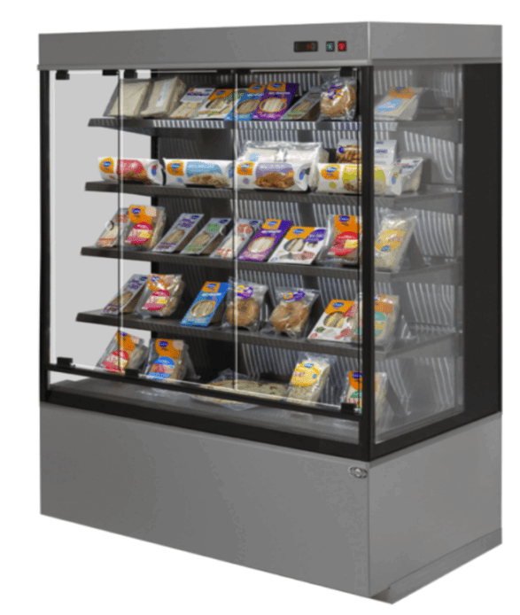

Sistema para la Mejora del Acceso Alimentario en Contextos de Vulnerabilidad Socioeconómica
Trabajamos con un firme compromiso de mejorar el acceso a los alimentos para personas en situación de vulnerabilidad alimentaria. Inspirados por el espíritu solidario de nuestra comunidad, hemos implementado una red de heladeras solidarias distribuidas estratégicamente a lo largo y ancho del país. Estas heladeras se encuentran en lugares de fácil acceso, como restaurantes, estaciones de transporte público y otros establecimientos, facilitando tanto a quienes necesitan alimentos como a aquellos que desean colaborar con esta causa.
Te invitamos a iniciar sesión o registrarte para sumarte a esta iniciativa y colaborar con nuestra misión de generar un impacto positivo en la comunidad.
